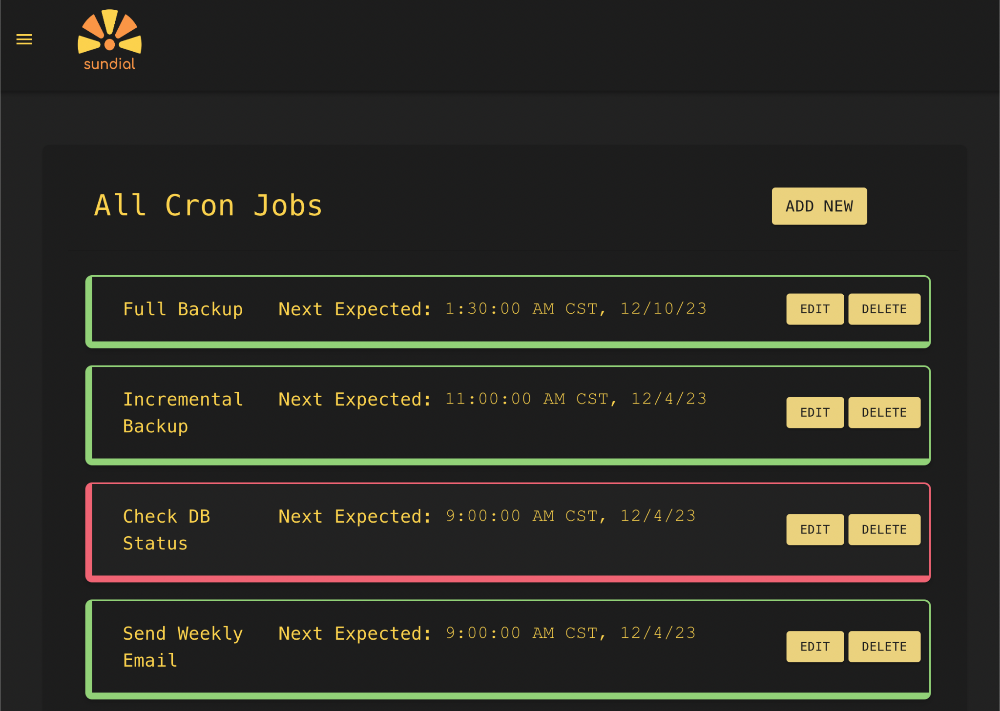
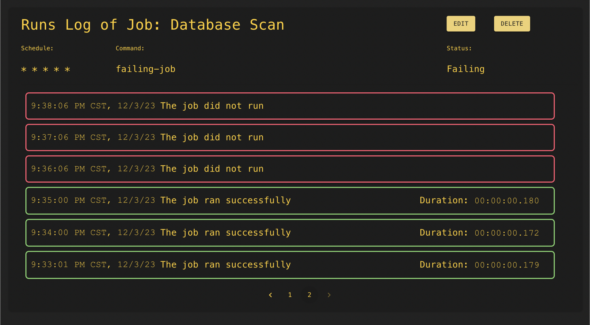
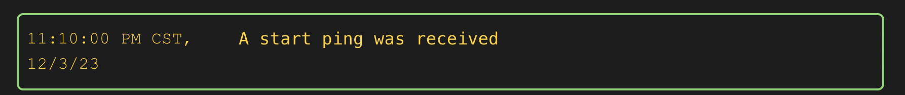
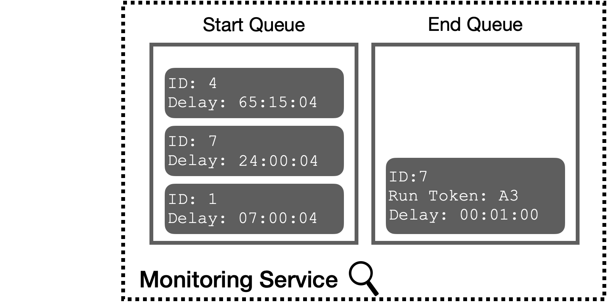
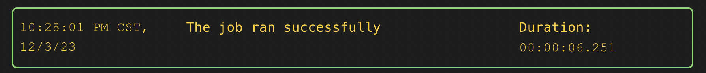
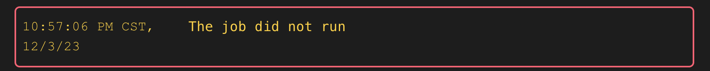
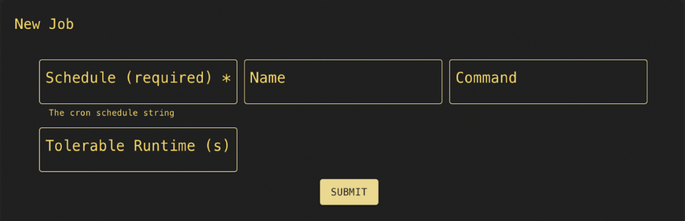
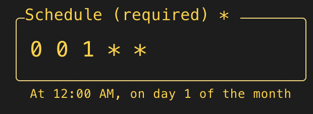

Case Study
1 Introduction
1.1 Overview of Sundial
Sundial is a self-hosted, open-source cron job monitoring and management system that users can operate across one or multiple nodes.
Designed primarily for individuals and small to medium teams, it provides a readily deployable option to aid in setting up, modifying, and monitoring cron jobs.
This case study introduces the cron utility and its problem space, followed by the design and implementation of Sundial. It concludes with a selection of tradeoffs and technical challenges.
2 Cron
2.1 The Cron Utility
Cron is a time-based job scheduler found in Unix and Unix-like operating systems, allowing users to automate the execution of tasks at specified intervals. Created in 1975, it remains a fundamental tool for scheduling routine processes.
Use Cases
Some common use cases of the cron utility are:

- Database Backups
Database backups are crucial for data management and risk mitigation, enabling organizations to recover from data loss swiftly and maintain business continuity. They must be performed regularly, making them a perfect candidate for automation using cron. - Log Rotation
System logs can grow over time and consume valuable disk space. Cron can rotate and compress log files at scheduled intervals, preventing them from becoming too large. - System Maintenance
System maintenance tasks such as cleaning up temporary files, performance testing, and updating software can be automated using cron. Regularly performing these tasks helps ensure the system's smooth operation. - Producing Reports
Cron jobs can be used to generate and send regular reports, such as sales figures, to relevant departments - this can help keep an organization efficient and productive. - Time-Based Scaling
Organizations with predictable traffic hours can use cron to scale their applications based on predefined schedules. Cron jobs can deploy additional server instances during peak hours and then remove them again later. This aids the efficient use of resources and conserves costs without requiring manual adjustments.
Cron Job
A cron job is a command or shell script executed periodically according to a fixed schedule, such as a specific time, date, or interval. Cron jobs comprise a schedule and a script; below is an example.

The schedule is articulated in a cron-specific syntax, detailed further in section 2.2 Limitations of Cron. The script denotes the specific executable to be run by cron at the scheduled intervals.
Crontab
The term ‘crontab’ refers to both a configuration file used for managing cron jobs and a command-line tool to interact with said configuration file. Subsequent references in this document pertain to the configuration file.
See how the command crontab -e displays the contents of the crontab configuration file in a text editor.
Each user on a machine has an individual crontab, and there is also a system-wide crontab.
Crond
Crond functions as a background process, also called a daemon. It regularly scans crontab files for scheduled jobs. When crond identifies a job scheduled to run, it initiates a child process dedicated to executing the job, as shown below.
Crond configures the environment to match the user's specifications, and the child process inherits the environment from crond, ensuring access to essential file paths and permissions while operating independently from both crond and the user shell.
2.2 Limitations of Cron
Despite being widely used, cron has limitations. A brief search for 'cron job issues' returns many results, indicating that users often face challenges when working with cron. Common cron user concerns include [1] [2]:
- Did my cron job start?
- Was my job completed?
- Is my schedule correct?
- Where can I find logs for cron jobs?
The remainder of this section explains the specific issues associated with cron that we designed Sundial to address.
Cron Jobs Fail Silently
The cron utility lacks alerting capabilities for errors during job execution. When a job encounters failure, there are two potential scenarios: it either fails to start or fails to complete successfully.
A failure to start indicates an issue with the cron utility simply not executing the script. Cron cannot initiate jobs if they contain specific user errors like incorrect paths or typos in the script names. Additionally, job initiation may fail during situations where system resources are depleted.
A failure to complete often suggests an issue inherent to the job itself. It could be the result of a bug or a failure of a dependency.
A particularly problematic scenario of job failure arises when the scheduled interval for a job is shorter than the duration of the job itself. This results in concurrent execution, known as overlapping jobs, and can potentially deplete system resources.
The impact of a job failing to run can vary from being merely inconvenient to severely detrimental. While the inconvenience of a marketing email not being sent might be manageable, the absence of essential database backups and the lack of crucial security updates can leave the system vulnerable.
Cron Logs Are Not Centralized
While the cron utility does not have built-in alerting for failed job execution, it records every attempt at cron job execution in the syslog. Therefore, users can manually inspect the syslog to confirm whether cron initiated the job.
Logs related to cron job output, including errors, aren’t saved anywhere by default. A user must manually direct the data to a location to capture these outputs. Options for this include configuring the cron utility to send output to their email or creating a log file and directing output from the cron job to that file.
Users must review these logs manually to determine if the job encountered any issues. If a user has numerous cron jobs or is running just a few frequently, it requires time, effort, and careful attention from the user to sift through the large number of logs produced to find and verify the desired information.
Writing Cron Jobs is Error-Prone
The cron scheduling syntax can be unintuitive, especially for new users.
To illustrate how easy it is to make a mistake, Figure 1 is an example of a schedule that indicates once a year, and Figure 2 indicates once a month.

It’s easy to accidentally write the wrong schedule, leading to jobs running at unexpected times. Additionally, a user must manually edit the crontab. When numerous other cron jobs exist, it’s easy to edit the wrong one mistakenly.
3 Solutions
3.1 Existing Solutions
There are many solutions to the issues we’ve mentioned. Services might focus on job monitoring or job management or offer both. Some do not use cron but instead implement the same functionality using different technologies, so they handle scheduling and execution through their own platform. We can split these options into the following categories:
Paid Services
Two paid solutions that aim to improve the cron experience are Cronitor and Cronhub:
- Cronitor prioritizes monitoring and provides a Command Line Interface (CLI) that automatically identifies all existing cron jobs on a system. It also offers monitoring of workflows, health checks, status sites, and other related features.
- Cronhub offers both monitoring and job scheduling on a single platform. The scheduling implemented by Cronhub does not rely on cron; any jobs scheduled with Cronhub will only appear on the Cronhub interface and not on a user’s own machine.
Both paid services have disadvantages:
- Data ownership: Dependence on a third-party service for monitoring or scheduling introduces the risk of relinquishing a user's data ownership. This may be undesirable for several reasons, including privacy concerns, as job error logs could contain sensitive system information, or legal reasons, such as the requirement to store data in the user's own country.
- Monthly fees: Both solutions impose a monthly fee on the user, determined by the number of monitors they have.
Open-Source
Two open-source solutions are Uptime Kuma and Cronicle.
- Uptime Kuma is a monitoring tool for various services, e.g., HTTP(s), TCP, and Docker Containers. While Uptime Kuma offers tracking of cron jobs through a Push monitor/webhook, its primary focus isn't on cron jobs. Despite having numerous features related to uptime monitoring, it lacks specific capabilities for collecting cron-related data such as start times, durations, or error logs.
- Cronicle is a cron-like service that handles the scheduling and execution of jobs internally without any help from the cron utility. Its main downside is that a user needs to transition any existing cron jobs to the service, which could be time-consuming and error-prone. Users may also be more comfortable relying on the cron utility instead of a system that claims to function like it.
DIY
A developer can also choose to build their own solution by copying the pattern used by the existing solutions. The pattern is to use HTTP requests for monitoring: a request will be sent before and after a job has been executed. The requests indicate if a job started and ended, and can be used to gather other details, like error messages.
Users don’t get a monitoring interface or other features like the named services offer, and setup and maintenance would require additional work. Still, it is customizable and contained wholly on their system.
3.2 Sundial
In exploring the options above, we saw a need for a product that would work for a user that:
- Has existing cron jobs and does not want to use a cron-like service
- Prioritizes owning their data (no third party)
- Seeks out cost-effective solutions
- Wants the option to monitor and manage their jobs in one place
To meet this use case, we based our decisions on the following goals:
- Control
We created Sundial as an open-source and self-hosted product, allowing users to maintain full control over their code and data. - In-Depth Cron Monitoring
Our monitoring system focuses on the cron utility. Sundial's oversight of cron jobs centers on automatically discovering tasks with a script the user can execute from the CLI and gathering jobs’ start times, durations, and error logs at runtime. - Cron-Based Management
Sundial offers a centralized platform for monitoring and managing all your cron jobs. Any modifications made to jobs within the user interface (UI) will update the crontab automatically.
In summary, Sundial is an open-source, self-hosted solution that focuses specifically on the cron utility and provides:
- reliable monitoring
- centralized error logging
- convenient job management from a UI

4 The Sundial System
4.1 Architecture
Sundial provides cron job monitoring and management across one or multiple nodes.
General Overview of Components
The Sundial system consists of two main components:
- The Monitoring Service
- The Linking Client
The following sections will give a general outline of the Monitoring Service and the Linking Client. We’ll explain the details of individual components and provide a high-level overview of their roles.
Monitoring Service
The Monitoring Service is primarily responsible for actively monitoring the execution of cron jobs. Additionally, it provides users with an interface, offering a way to interact with and manage their cron jobs.
The Service consists of four components:
- a UI, accessible via the browser
- an application server that exposes an API
- Task Queues
- a PostgreSQL database

We’ve containerized the Monitoring Service for straightforward deployment. The UI, database, and application server (including the Task Queues) are each encapsulated into a Docker image. A Docker Compose script runs them collectively as a single package.
Linking Client
The Linking Client serves as a link between the Monitoring Service and the crontab.

It consists of:
- a lightweight HTTP server known as the Listening Service
- a binary executable containing a collection of scripts

The Linking Client is packaged as a standalone binary executable. Users can install the Linking Client on any Linux server without additional dependencies.
Once installed, the Linking Client scripts can be executed by other processes, notably crond, or by the user via commands in the CLI.
After installation, the user must execute one such command: sundial register. This executes the registration script, which establishes the connection between the Monitoring Service and the Linking Client and configures the Listening Service to run as a background process.
Adding Nodes
Sundial accommodates both single and multi-node setups.
In a single-node configuration, the Monitoring Service and the Linking Client coexist on the same node.

For multi-node scenarios, additional nodes - termed remote nodes - are integrated through the installation of the Linking Client. The Monitoring Service, on the other hand, only runs on one designated node, referred to as the hub node.
When adding new remote nodes, the sundial register command is passed the IP addresses of both the hub node and remote node as arguments. These addresses are stored on both nodes and used to facilitate future communication.
If desired, the hub node can exclusively host the Monitoring Service, monitoring the cron jobs of remote nodes across a distributed network.

4.2 Job Monitoring
Monitoring aims to detect issues promptly, such as errors during job execution or jobs failing to run. Sundial conveys this information through its UI, using color to highlight potential faults during job execution.
The Monitoring Service creates a monitor entity for every monitored cron job.
Awareness of Jobs and their Execution
This section focuses on how the Monitoring Service documents job execution. To do this, the Monitoring Service requires two things:
- Prior knowledge of a user’s jobs and when they are due to execute.
- Real-time notification of when jobs start, when they end, and when they encounter errors.
The Linking Client provides both requirements to the Monitoring Service. Next, we explain the two scripts that enable the Linking Client to do so.

Prior Knowledge - discover
The Linking Client uses its discover script to provide the Monitoring Service with knowledge of jobs in a user’s crontab. The user executes the command sundial discover from the CLI to run the discover script.
The discover script sends information about each job in the crontab file, such as the schedule and command, to the Monitoring Service. The Monitoring Service stores this information in its database.
Additionally, the discover script sets up the real-time notifications of job execution that the Monitoring Service requires through a process called “wrapping”.
As shown above, cron jobs are considered “wrapped” when the text sundial run, followed by a string of letters and numbers, has been inserted in between the schedule and the command.
The string of alphanumeric characters, known as the endpoint key, is used by the Monitoring Service to link execution notifications from a job with the job’s corresponding database entity.
The following section will go over the run script in detail.
Real-Time Notification - run
Once the Linking Client has wrapped a job, it can send notifications about its execution via the Linking Client’s run script.
The run script sends information to the Monitoring Service via requests to the Monitoring Services API; these requests are called pings.
There are three types of pings:
- When a job starts executing, the run script sends a start ping to the Monitoring Service
- When a job finishes execution, the run script sends an end ping to the Monitoring Service
- When a job encounters an error, the run script sends an error ping to the Monitoring Service
These pings give the Monitoring Service real-time notification of when jobs start, end, or encounter errors.
The remainder of this section is a detailed explanation of how the run script sends pings.
First, a refresher on how the cron utility executes cron jobs: the cron daemon executes anything following the schedule string. In the example cron job below, crond executes the rotate-log script directly.
When a job is “wrapped”, the schedule string is followed by sundial run, an endpoint key, and the original job script.

With this setup, the cron daemon executes sundial run with two arguments. Recall that sundial run is simply a script installed as part of the Linking Client.
When launched, the run process sends a start ping to the Monitoring Service to notify the Service that the job has begun.
Next, the run process spawns a child process that executes the actual job script.
Since child processes inherit the environmental variables of their parent processes, the run process inherits the user context set up by crond and passes that on to the job process. This means the job is executed in the same environment as if it were run directly by crond.
Once the job finishes executing, the job process returns with an exit code. The run process has access to this exit code because the job process is run as a child of the run process. The run process sends an end ping to the Monitoring Service.
Additionally, if the exit code provided by the job process signifies an error occurred, the run process sends the Monitoring Service an error ping. This ping is different from an end ping in that it contains the error log, if one is available, returned by the job process.
Finally, the run process exits.
In summary, the Linking Client's scripts allow the Monitoring Service to document the execution of cron jobs and store error logs.
Awareness of Missed Execution
Recall that to monitor effectively; the Monitoring Service must document not only the execution of cron jobs but also any instances where a scheduled job fails to execute as intended.
A few reasons for irregular or failed job execution include:
- Host node resources could be depleted, preventing the cron daemon from running jobs
- A job might be running for longer than usual - perhaps because it's processing a larger than normal data set or it’s stuck in an infinite loop
- Manual changes to the crontab may not have been propagated to the monitoring service
- Network issues
When a job fails to execute, the Linking Client doesn't send any pings to the Monitoring Service. Despite this, the Service must maintain a record of this event. Solving this challenge is not straightforward because it requires the Monitoring Service to recognize the absence of a ping, also known as a missed ping.
The Monitoring Service uses Task Queues to deal with missed pings.
Task Queues are implemented with pg-boss [3], an npm package built on PostgreSQL. Specifically, we leverage the deferred tasks feature, where tasks are added with a specified delay and are processed by a worker only after that delay has passed.
A worker is a function assigned to a queue. The Monitoring Service executes this function when 'processing' a task, passing in any additional data included in the task.
Above is an example of a deferred task in action: there are three tasks on a queue, and as time elapses, the delay eventually reaches zero, and the worker processes the task.
The Task Queues component consists of a Start Queue and an End Queue. The Monitoring Service uses tasks on these queues to keep track of the expected arrival times of each cron job’s start and end pings.
Every task on either Queue is added with a delay and waits for a specific ping from the Linking Client. If the ping arrives, the Monitoring Service removes the task. If the delay elapses without the arrival of the ping, a worker processes the task.
In the examples, we will elaborate on a few items the worker is responsible for. Critically, the worker documents that the Monitoring Service did not receive a specific job’s expected start or end ping.
Start and End Queues
Start and End Queues use tasks to recognize the absence of start and end pings, respectively.
A task exists in the Start Queue for every job in the Monitoring Service at all times. This is because, by definition, there is always a next expected start time for any given cron job.
A task is added to the End Queue only after a job’s start ping arrives. If the Monitoring Service does not receive a job's start ping, the Service’s logic dictates that an end ping should not be expected, and the End Queue is not used.
The most critical component of the Queues is the delay for each task. If the Monitoring Service doesn’t receive a ping within the specified delay, the associated task is processed, and the Service documents the ping as missed.
Calculating the delay for a Start Queue task:
time until next scheduled execution of job + grace period
The grace period is set to 5s to account for expected delays such as network latency or high load on the Monitoring Service.
Calculating the delay for an End Queue task :
tolerable runtime + grace period
Tolerable runtime signifies the maximum acceptable duration of the job. The default is set to 15s, but users can configure this in the UI to suit their preferences.
Since every task has a delay, these calculations occur every time a new task is added or when one is updated.
In summary, the Task Queues allow the Monitoring Service to document the missed execution of cron jobs.
Utilizing the Data
Through the methods discussed above, the Monitoring Service can record data about the execution of each job.
Execution data is organized as database entities called runs. For each expected execution of a cron job, Sundial creates a new run. Runs contain information regarding the existence or absence of start and end pings captured in the run’s state. The UI displays this data to the user.

The system accounts for seven various run states. Each state provides insight into the execution status, occurrences of errors and irregularities, and, taken together with other listed runs, the overall health of the cron job.
Examples
The detailed examples that follow outline the sequence of events triggered within the Monitoring Service for when the Service:
- receives an expected start ping
- receives an expected end ping
- does not receive an expected start ping
- does not receive an expected end ping
Pings Received
Pings contain:
- an endpoint key, used for matching a job to a monitor
- a run token, used for associating an executing job’s start and end ping
Start Ping Arrives:
- The Linking Client sends a start ping before the job starts.
- The Monitoring Service creates and stores a run. The run contains the supplied run token and is given a state:
started. - The Monitoring Service displays information derived from the run state to any user viewing the UI using Server-Sent Events (SSE). 
- To ensure that the Task Queues are constantly keeping track of when a job’s start or end pings are expected to arrive next, the Monitoring Service makes changes in both the Start and End Queues:
- Update task in Start Queue:
- The Services uses the ID (in this case, 7) to find the task in the start queue that is associated with the correct monitor
- The Service updates the delay to reflect the next expected arrival of a start ping (12 hours)
- Create task in End Queue:
- The Service adds a task with the run token provided by the ping. The worker that processes this task uses the run token to ensure it alters the correct run entity in the database.
- The Service sets the delay using the tolerable runtime (1 minute) 
End Ping Arrives:
- The Linking Client sends an end ping once the job ends.
- The Monitoring Service retrieves the run created by the start ping and updates its state to
completed.

- The Service removes the associated End Queue task because the end ping came within the tolerable runtime.
- Remove task from End Queue:
Pings Missing
No Start Ping Arrives:
- The Linking Client does not send a start ping when the Monitoring Service expects one.
- The delay on the task in the Start Queue elapses, and a worker processes the task.
- The worker creates a new run with the state
missed.  - The worker creates a new task in the Start Queue to recognize the next expected start ping.
No End Ping Arrives:
- The Linking Client does not send an end ping when the Monitoring Service expects one.
- The delay on the task in the End Queue elapses, and a worker processes the task.
- The worker retrieves the run created by the start ping and updates the state to
unresolved.
4.3 Job Management
Sundial also provides cron job management. Management refers to the ability for users to add, edit, and delete jobs across one or multiple nodes from the UI.
Managing jobs through the UI reduces the risk of errors associated with manual crontab changes. It also adds user convenience by providing a centralized platform for interacting with one or multiple crontabs.
Each cron job is added or edited from its form, like the one shown here.
The form allows the user to see the schedule and command of a job clearly at a glance and makes it harder to modify the wrong cron job. Additionally, the schedule field includes an automatic Schedule Translator. It translates the schedule string to text in real time as a user enters data into the form. The Translator confirms the accuracy of the schedule, clarifying the cryptic cron schedule syntax.
The Monitoring Service automatically synchronizes changes made to jobs from the UI with the crontab. In a multi-node setup, the user must specify the node when adding new jobs.
Altering Crontab from UI
New jobs or job updates written to the UI are referred to as management data. This section explains how management data travels to its intended crontab. The components involved in management are:
- Dashboard
- Database
- Listening Service
- Linking Client
updatescript - crontab
In this section, we refer to communications between the Dashboard and the Monitoring Service's database, as well as the the Linking Client and the Monitoring Service's database. The Dashboard and the Linking Client perform these interactions using HTTP requests to the API exposed by the Monitoring Service's application server. However, for the sake of simplicity, we do not make further reference to this and treat the discussion as if the Dashboard and Linking Client can interact with the database directly.
Recall:
- The Monitoring Service runs in a Docker container on one node, the hub node.
- The user installs the Linking Client on each node with a crontab they want to integrate with Sundial.
When the user inputs new management data to the Dashboard, the data is saved to the first persistent data store it encounters: the database.
Next, the management data must travel from the Monitoring Service’s database to the appropriate crontab. Since the crontab and the Monitoring Service might reside on different nodes, the management data may have to travel over the network. Even in the single-node architecture, editing the crontab of the host machine directly from the Monitoring Service poses difficulties because the Monitoring Service runs in a Docker container.
To address this issue, the Linking Client includes an update script that fetches management data from the Monitoring Service’s database and writes it to the crontab. In the below diagram, arrows represent HTTP requests and responses.
The Listening Service, a simple HTTP server integrated into the Linking Client, executes the Linking Client’s update script.
The Listening Service has one role: to await requests from the Monitoring Service. A request signals new management data is available in the Monitoring Service's database. When the Listening Service receives this request, it initiates the execution of the update script. Note that the update script is idempotent, guaranteeing consistent and predictable outcomes with each execution.
Below is a diagram of the complete management data flow.
While this process may seem circuitous, we deliberately routed management data through the Linking Client’s update script. We will explain our design considerations in the Engineering Decisions section.
5 Engineering Decisions
5.1 Monitoring
Trade-offs: Getting Information about Job Execution
To get information about the execution of the job, we used the same pattern we saw from other task monitoring services: sending requests (pings) before and after job execution. Receiving a ping would indicate that a job successfully completed an action (it started or ended), while not receiving one would indicate a failure (failure to start or end).
We considered two options to send these pings: insert cURL GET requests to all jobs in the crontab or write a ‘wrapping’ script that included the ping logic and the user’s command and have cron run it. We initially chose to use cURL requests for simplicity.
The first cURL executes before the start of a job. The second cURL only executes if the script test-job.sh completes successfully.
Sending requests in this manner was quick to implement, giving us time to reflect on whether we could improve or add to the information we were getting from job execution.
We realized that writing a ‘wrapping’ script instead gave us more control because we could add logic around a job’s execution: we could gather error logs, send more specific information like a ping to indicate failure, and execute any additional actions (e.g. re-running a job, although we did not implement this).
The final implementation of our Monitoring Service uses this ‘wrapping’ option.
Recall the discover and run scripts from the Linking Client: the user runs sundial discover to wrap their cron jobs, which involves adding sundial run. The run script invokes a child process to run the user’s specified script, which makes it possible for the script to send a ping when a job errors out and send error logs from that aborted process.
Challenge: Unordered Pings
When the Monitoring Service receives both start and end pings, the Service initiates operations on a shared database record, a run - either through an INSERT or UPDATE operation. However, the Monitoring Service can receive the pings out of order, i.e., receiving the end ping before the start ping, which adds additional complexity in handling these requests.
To address this issue, we engineered the Monitoring Service to always check for the presence of existing runs, regardless of whether a start or end ping is received. The Monitoring Service uses the existence and state of such runs to act appropriately if the pings arrive out of order.
Challenge: Race Condition
As mentioned, when the Monitoring Service receives a ping, it must update or create a run. A chain of subsequent actions follows this. The state of a run dictates these subsequent actions, which include Task Queue operations, user notifications, and database operations. The Monitoring Service’s application server housed all of this in our initial implementation.
However, we discovered that this approach led to race conditions, occasionally creating duplicate run entities. These race conditions arose in scenarios where the job duration was extremely brief, spanning only a fraction of a second, and the start and end pings arrived in quick succession.
To understand this, let's first look over how our initial implementation handled the arrival of a start ping.
- Upon the arrival of a start ping at the application server, the server initiates a SELECT query to retrieve a run using the run token present in the start ping.
- The application server verifies if any rows were returned from the database.
- With the database returning no rows, the application server executes an INSERT query to create a new run.
- Finally, the application server appends a new task to the end queue, awaiting the arrival of an end ping.
Let's look at how this translates when the start and end ping arrive almost simultaneously.
- Upon the arrival of the start ping at the application server, it initiates a SELECT query to the database.
- An end ping arrives almost immediately. Due to the asynchronous nature of the database calls, the application server proceeds to handle this request without waiting for the completion of the start ping’s SELECT query. It triggers another SELECT query to check for an existing run in the database.
- As the start ping's SELECT query yields no rows, the application server executes an INSERT operation into the database.
- Simultaneously, the end ping's SELECT query, initiated before the beginning of the start ping’s INSERT, also returns no rows. Consequently, the application server executes an additional INSERT into the database.
- After the start ping’s INSERT is complete, the application server adds a task to the end queue.
- Upon surpassing the tolerable runtime, the task triggers, and the Monitoring Service inaccurately notifies the user that their job was not completed.
This leads to the database containing duplicate runs with incorrect states in their respective entries. Furthermore, the Monitoring Service erroneously informs the user of job failure.
To resolve this issue, we moved the responsibility of updating or inserting a run to the database layer. Our approach used PostgreSQL’s UPSERT operation, which either updates existing rows or inserts new rows otherwise and guarantees that when the application server receives a ping, it can always retrieve an associated run, mitigating the chance of race conditions.
Additionally, the database returns the run indicating whether an INSERT or UPDATE operation occurred, which allows the Monitoring Service to determine if subsequent actions concerning the Task Queue and user notifications need to be executed.
Trade-offs: Architecture for Missed Pings
Designing the logic for handling missed pings revolved around tracking the next expected start time and the next expected end time. We ended up deciding between two different implementation options: one that used database attributes and another that used task queues.
The first approach was to make the next expected times attributes of the monitor entity in the database. The approach went as follows:
- A monitor is registered, and the Monitoring Service creates a corresponding entity in the db. The next expected start time and next expected end time attributes are calculated.
- Each minute, the Monitoring Service checks both attributes on each monitor against the current time.
- If the specified time of either attribute has lapsed, the Monitoring Service executes actions specific to the attribute type.
- The Monitoring Service recalculates the next expected time of the attribute whose time had lapsed.
The benefit of using this first approach is that it was lightweight – it did not require any additions to the architecture. The downside was that the logic was complex and was tightly coupled to monitors.
Instead, we chose to implement task queues. At the expense of adding complexity to the Monitoring Service’s architecture by introducing a new component, it provided separation of logic between missed pings and monitors, and the missed ping tasks would be decoupled from their execution.
Trade-offs: Cache-Based vs. Database-Based Queues
Once we had settled on using task queues, we had to decide on whether to use a database-based or a cache-based queue.
It’s important to note that we only needed one specific functionality of a task queue: deferred tasks.
Remember that when the Monitoring Service receives a ping, it needs to process subsequent actions, which include adding or updating tasks. One stress point is when there are many concurrent jobs because the Service receives the pings all at once.
A cache-based queue would allow the Monitoring Service to handle more concurrent jobs in a reasonable response time. This is due to its fast write times, which directly impacts the processing of adding and updating tasks. The downside is that we would be adding complexity to the architecture and not using any other cache functionality.
The database-based queue would not be able to handle as many concurrent jobs because querying the database is slower than a cache. Still, it would require no changes to the architecture since we could reuse our existing database.
We did not expect many concurrent jobs for our use case of individuals and small to medium-sized teams, so we opted for a database-based queue. (We discuss more details on the number of concurrent jobs Sundial supports in the Load Testing section).
We chose pg-boss, a database-based job queue, to implement our start and end queues for the following reasons:
- Ideal for our stack: it was built for Node.js applications on top of PostgreSQL (we use both Node.js and PostgreSQL)
- It gave us an easy way to implement a task queue without complicating our architecture
Sending out Notifications
Notifications, in general, are challenging because when they should be sent out can vary depending on the user. We identified two alternative notification methods:
- Sending notifications each time a job fails.
- Triggering notifications on a state change, i.e., when a job starts failing or, after repeated failures, begins succeeding.
The first method is more straightforward and reduces the risk of users missing crucial notifications for continuously failing jobs. However, jobs running at short intervals (e.g., every minute) could flood users with excessive notifications. Additionally, this approach doesn't inform users when a previously failing job recovers, which can be valuable information.
We opted for the second method to prevent overwhelming users with repeated notifications and to include alerts when a job recovers. However, a drawback is that users will only receive a notification for the initial failure if a job fails multiple times. To address this, we utilized the Task Queues to schedule a task at 9 AM every weekday. This task will alert the user to all their failing jobs, reducing the chance of missing a failure alert.
For a more comprehensive solution, future work could involve allowing users to customize their notification preferences via the UI. For example, the next version could include a setting that lets the Monitoring Service ignore initial job failures up to a specific count before triggering notifications or turn off notifications entirely for specific jobs.
Runs Rotation
With monitoring, there is an ever-increasing amount of data related to runs. Thus, we decided to limit the number of runs (on a per-monitor basis). We implemented a rows rotation mechanism (similar to log rotations [4]) to our runs table to ensure that the table did not keep growing infinitely. We implemented a stored procedure that runs once weekly and reduces the amount of runs by deleting all runs except the 100 most current for each monitor.
A stored procedure [5] is a feature available in many RDBMS and is a grouping of SQL statements. Stored procedures have names used to call them and execute the group of statements, similar in function to a batch script. An additional job queue (called the maintenance queue) was created with pg-boss, and the stored procedure is scheduled using a deferred job to be processed at the time mentioned.
5.2 Management
Trade-offs: Source of Truth
This section looks into how we chose our cron job information source of truth. A source of truth is an authoritative data store that other data stores duplicate if discrepancies arise.
Instead of managing from the Monitoring Service UI, a user might manually edit a job’s schedule from the crontab, leaving the crontab and Monitoring Service database with different cron job information. This creates errors in the monitoring data shown to the user since the job now executes on a different schedule than the Monitoring Service expects.
To reconcile these types of inconsistencies, we had to choose our source of truth:
- The crontab file
- The Monitoring Service database
Let's explore how both options would work if a user were to modify a job from the UI.
For option 1, the Monitoring Service must apply the UI modifications while recognizing the crontab as the source of truth. To do so, the Monitoring Service would begin by fetching the crontab’s jobs from the Linking Client. Only then would it consider the UI modifications, integrating them with the crontab jobs and sending the updated management data to both the database and the Linking Client to update the crontab.
For option 2, the Monitoring Service would simply use the UI modifications to update the source of truth (the database) and then send the management data to the Linking Client to overwrite the crontab.
We chose option 2 for its reduced complexity and network load; the Monitoring Service never fetches the crontab’s jobs. The downside to this choice is that the Linking Client overwrites new manual changes to the crontab with each sync with the Monitoring Service. Thus, users should exclusively manage their jobs through the UI to ensure their changes persist.
Trade-offs: Listening Service vs Polling
We had two options to send management data to the Linking Client: use the Linking Client Scripts to poll the Monitoring Service for new management data or have the Monitoring Service push modification notifications to the Linking Client.
The first option, polling, used a cron job to repeatedly send requests to the Monitoring Service's API for new job data.
We opted for the second option, the Monitoring Service pushing data only when available, and built out the Listening Service.
The downside of this decision was that we needed to add additional infrastructure on each remote server. On the other hand, frequent polling suffers from potential delays and increased server load. The Listening Client approach offers faster updates from UI to crontab and minimal network load.
Trade-offs: Direct Transmission of Data vs Separation of Concerns
This section examines our options for managing data flow to the crontab.
The simplest option was to have the Monitoring Service directly transmit updated cron job information to the Listening Service. The Monitoring Service makes an HTTP request to the Listening Service containing the data, triggering the Listening Service to invoke a Linking Client script that writes the data from the request body to the crontab.
This approach worked fine in the locally hosted version of our application. Still, it introduced a notable vulnerability over multiple nodes: if not appropriately secured, each Listening Service would become a potential entry point for malicious actors to inject unauthorized cron jobs.
As seen in the Management section, this vulnerability led us to an alternative set of steps:
- The Monitoring Service would send a request to the Listening Service notifying it that there were new modified jobs (but would not include the management data itself)
- The Listening Service would trigger the
sundial updatescript to request those job modifications from the Monitoring Service
While more complex, this decoupling isolates the notification of new job modifications from the actual job modifications. Management data is transmitted only as a response to a request to the Monitoring Service's API, which is secured using API Keys (discussed in the Security Considerations section).
As long as the Monitoring Service and remote server remain secure, this approach hinders malicious actors from altering our crontabs via requests to the Listening Service.
Trade-offs: Data Payload
When framing this section’s decision, we had one primary concern: what if there's an error when transferring management data to the crontab?
Consider this scenario: the Monitoring Service removes a job from the database and notifies the Linking Client accordingly. However, attempts by the Linking Client to delete the job result in an error, leaving the job to persist within the crontab. While the job won't exist in the database, it will keep running on the node, invisible and unmanageable through Sundial’s UI. That’s a big issue!
To account for this concern, we had to ensure that each sync would not only update the crontab with new management data but also remove any previous inconsistencies.
With this in mind, we had to decide what the Monitoring Service's API should respond with to the Linking Client's sync requests:
- only new management data
- all cron job data associated with the node
First, we considered option 1. To resolve previous inconsistencies on each sync, the Linking Client would send a copy of the crontab file to the Monitoring Service when requesting updates. The Monitoring Service would then parse this copy to determine what actions the Linking Client needed to take, accounting for any inconsistencies in the crontab and new updates from the UI.
For option 2, the Linking Client would overwrite the crontab entirely with all the cron job information provided by the Monitoring Service during each sync, addressing any prior inconsistencies.
We chose option 2 for its simplicity. The Monitoring Service didn't need to parse the existing crontab, and the Linking Client didn't have to include a copy of the crontab in its request for updates.
5.3 Security Considerations
This section will outline our approach to addressing security concerns when using Sundial across multiple nodes.
In the multi-node architecture, both the Listening Service of the Linking Client and the application server of the Monitoring Service must expose a port to the network to facilitate communication.
Of course, it’s best practice to secure any API accessible through the network, but it’s especially critical to secure the API provided by the Monitoring Service’s application server.
Access to the Monitoring Service’s API would allow a malicious actor to modify the crontabs of both the hub server and any connected remote servers. Additionally, unauthorized changes to monitoring data might disrupt job monitoring, or a flood of requests could overwhelm the system.
Our primary recommendation is to employ Sundial's multi-node setup within a Virtual Private Cloud (VPC). VPCs are private, isolated network environments within the cloud that ensure secure communication between nodes using private IP addresses. VPCs are region-specific, meaning a user's nodes cannot span regions.
To enhance adaptability, we've implemented initial security measures for scenarios where VPCs are not feasible. It's crucial to emphasize that these efforts represent initial steps, the system should be hardened further to operate over the wider internet.
Authentication methods for the Monitoring Service’s API differ between the UI and Linking Client. UI requests require a JSON Web Token (JWT), while the Linking Client uses an API key.
JWTs and API keys must be used in tandem with the HTTPS protocol to provide encryption. To enable HTTPS, the user must obtain an SSL certificate for the hub node.
Upon user login, the Monitoring Service generates a new JSON Web Token (JWT) and stores it in the user's browser. The JWT expires after a set time, after which the user needs to log in again to obtain a new one. This mechanism enhances security by regularly refreshing and validating user authentication.
API keys are distributed individually to remote nodes. Users must obtain a new key from the password-protected UI and register it to the node. The registration process involves running the sundial register command from the CLI of the target node and passing the key as an argument. The Monitoring Service’s database stores a hashed copy of the API key for authentication when processing requests.
6 Load Testing
We conducted load testing on our application to ascertain the maximum number of concurrent cron jobs the Monitoring Service can handle effectively.
When interpreting the outcomes, we consider the worst-case scenario, assuming the jobs operate at the minimum interval provided by the cron utility - every minute.
Since our application is self-hosted, we must carefully select the appropriate hardware for conducting our tests. We opted for the minimum available Digital Ocean droplet, characterized by the following specifications:
- CPU Type: Regular Intel
- vCPUs: 1
- Memory: 1GB
- Cost: $6/month
6.1 Utilizing Grafana k6
For conducting the tests, we employed the Grafana k6 open-source load-testing tool, executed on a local machine belonging to one of our developers. k6 tests involve virtual users and a user-provided testing script.
This script is executed for a specific duration or a set number of times by a designated number of virtual users, which can operate sequentially or concurrently.
In our case, we structured the testing script to replicate the procedural sequence of the sundial run script.
It begins with a start ping, observes a specified interval, and concludes with an end ping. The script undergoes n iterations using n virtual users that operate concurrently, closely simulating the behavior of n monitored jobs executing on the same schedule.
There are two variables in our tests:
- The waiting period observed between start and end pings. This simulates the duration of the modeled jobs.
- The number of iterations, simulating the total concurrent jobs.
6.2 Load Testing Objectives
This section defines clear and measurable performance goals in load testing. Establishing these objectives is crucial to assess and confirm the application's performance under the strain of monitoring a substantial volume of concurrent jobs.
Our two primary objectives are to:
- Maintain a failure rate of 0%
- Ensure that no jobs overlap
A 0% failure rate indicates that every request forwarded to the Monitoring Service should be processed without encountering any failures. We verify that all requests yield a 200 status code to ensure this.
Jobs overlap when they aren't completed before their subsequent scheduled execution, leading to multiple instances of the job running simultaneously. This is an often-cited cause of cron-related failures [6]. We convert this objective into a quantifiable target by restricting response time.
For jobs set to run every minute, we determine this restriction using the formula:
d + r < 60
Where \(d\) is the duration of the job, modeled by the waiting period, and \(r\) is the response time of the end ping. For example, if a job lasts 55 seconds, rearranging this equation yields a maximum acceptable response time of 5 seconds.
Rephrasing our core objectives more explicitly:
- Status Code: Ensure all requests attain a 200 status code
- Overlap Limit: The combined job duration and response time of the end ping should not exceed 60 seconds
6.3 Results
We'll explore the outcomes derived from our load testing, focusing on simulations of two different job durations: one lasting 200 milliseconds and another extending to 55 seconds.
Test 1: 200 Millisecond Job Duration
The 200-millisecond job duration was the shortest among our tests. Its quick start and end pings increased the number of requests per second for the Monitoring Service, causing the longest response times among all the modeled scenarios.
In line with our objectives, here's what we discovered:
- Failures started at the 200 concurrent job mark when 5% of requests yielded an incorrect status code.
- Avoiding overlapping jobs set a relaxed restriction on response times, capped at 59.8 seconds. Notably, our tests never reached this limit, even when scaling up to 200 concurrent jobs, as indicated by the 95th percentile line.
Test 2: 55 Second Job Duration
The 55-second job duration was the lengthiest we examined. Its extended interval between start and end pings lessened the load on the Monitoring Service, leading to the shortest response times.
Following our objectives, here's what we found:
- Failures only occurred around the 400 concurrent job mark, which is not depicted in the graph. This aligns with the reduced peak load on the Monitoring Service due to the extended gap between start and end pings.
- The extended duration enforced a strict 5-second maximum on response times to prevent job overlap, which, based on the graph and considering the 95th percentile, roughly equates to a limit of 30 jobs.
6.4 Benchmarking
Using the 30 job limit imposed in the context of the 55-second job as a benchmark, we can compare prices with another monitoring provider. Cronitor, for instance, offers cron job monitoring at a base rate of $2 per monitor per month. Considering our tests were conducted with Sundial deployed on the minimum $6 per month Digital Ocean droplet, we derive a cost of 20 cents per monitor per month. This signifies a 90% decrease in expenses.
7 Future Work
As with any project, there are always ways to improve or extend it. Here are a couple of ideas that we thought would be particularly impactful:
- Historical data & choice (date/time) of run rotations
- User settings for notifications
- Allow use of all crontabs on a server, not just the crontab of an individual user
- Provide the option to daemonize the Listening Service for additional non-Linux OS’s
- Better support a full public deployment option: HTTPS Server + Additional security steps
8 References
[1] https://serverfault.com/questions/449651/why-is-my-crontab-not-working-and-how-can-i-troubleshoot-it
[2] https://stackoverflow.com/questions/22743548/cronjob-not-running
[3] https://github.com/timgit/pg-boss
[4] https://en.wikipedia.org/wiki/Log_rotation
[5] https://www.postgresql.org/docs/current/xproc.html
[6] https://cronitor.io/guides/cron-troubleshooting-guide
The Team